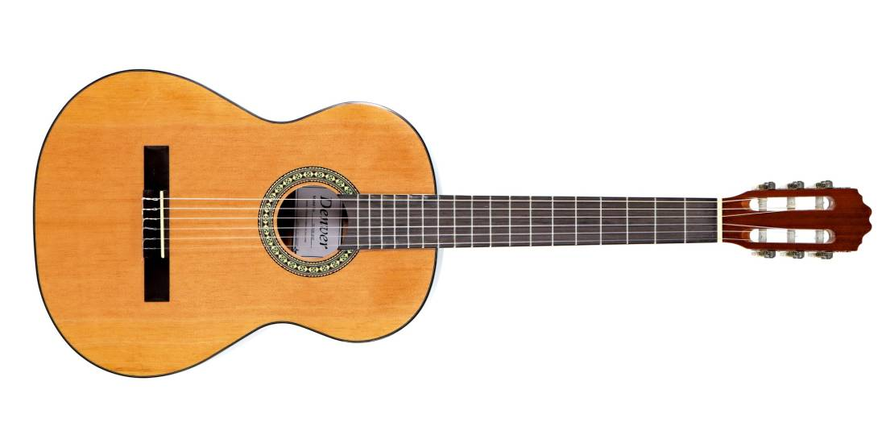

Rap music is a genre characterized by rhythmic spoken or chanted rhymes over a percussive beat. Originating in African American communities in the 1970s, rap often addresses social issues, personal experiences, and cultural themes. It has evolved into a global phenomenon, influencing various aspects of popular culture, including fashion, language, and social activism.
Dancehall
Dancehall music is a genre originating from Jamaica, known for its infectious rhythms, catchy melodies, and energetic beats. Rooted in reggae and influenced by various music styles, dancehall features DJ toasting, catchy hooks, and pulsating basslines. It's often played in clubs and parties, inspiring movement and dance. Dancehall lyrics cover a wide range of topics, including love, social commentary, and party culture.
Featured Artists
Babytron
BabyTron is an American rapper. His real name is James Edward Johnson IV and he was born on June 6, 2000. He initially gained popularity in 2019 with his track "Jesus Shuttlesworth". BabyTron is a member of the hip hop group ShittyBoyz
Plumpy Boss
Plumpy Boss is a talented reggae and dancehall musician from Port of Spain in Trinidad. Plumpy Boss was raised in a musically interested family and became passionate about music at a young age. With his distinctive reggae and dancehall fusion that represents his Caribbean background, he made his debut in the music industry.
Popular Instruments
Guitar
The guitar is a stringed musical instrument that typically features six strings and is played by plucking or strumming the strings with the fingers or a pick. It is one of the most popular and versatile instruments in the world, used in various music genres such as rock, pop, blues, and folk. The guitar produces sound through the vibration of its strings, which are stretched over a hollow body or solid piece of wood. It is renowned for its melodic and rhythmic capabilities, making it a staple instrument in countless bands and musical compositions.

Piano
The piano is a versatile keyboard instrument with a wide range of notes and expressive capabilities. Played by pressing keys that trigger hammers to strike strings inside the instrument, the piano produces a rich and resonant sound. It is renowned for its ability to play both melody and harmony simultaneously, making it a fundamental instrument in classical, jazz, pop, and many other music genres. The piano's dynamic range and versatility have made it a staple instrument in solo performances, ensembles, and compositions for centuries.